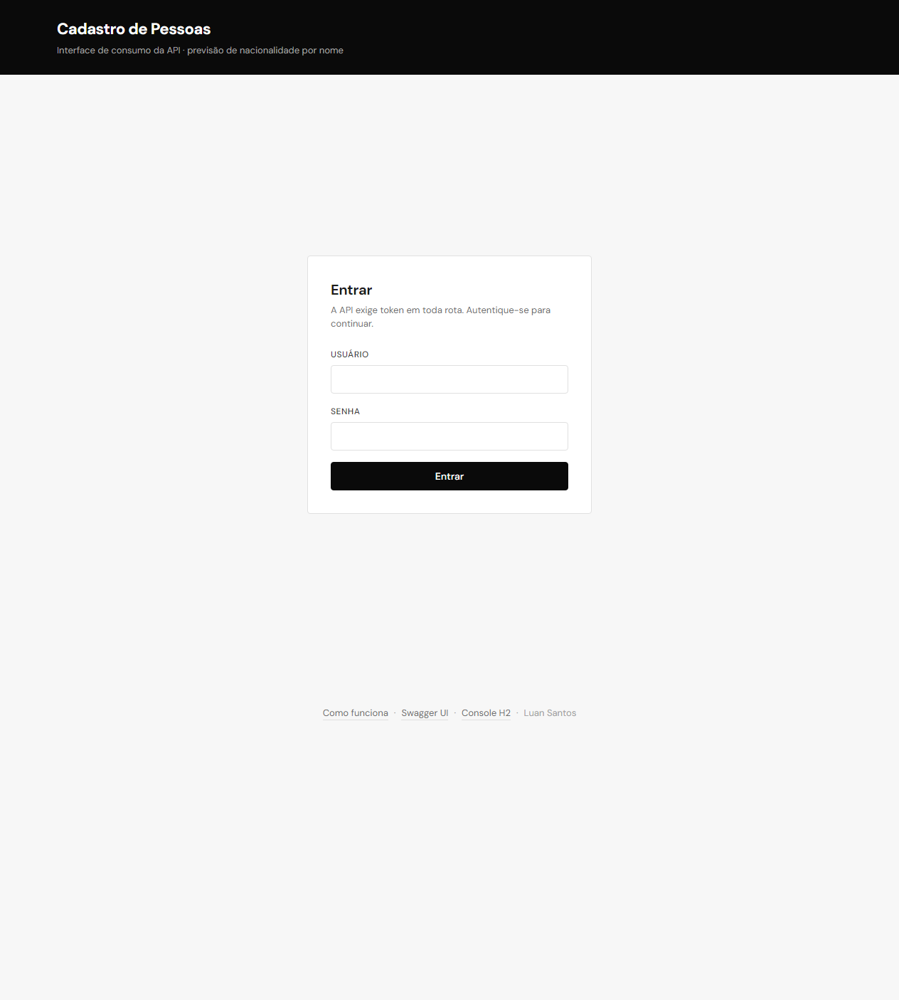
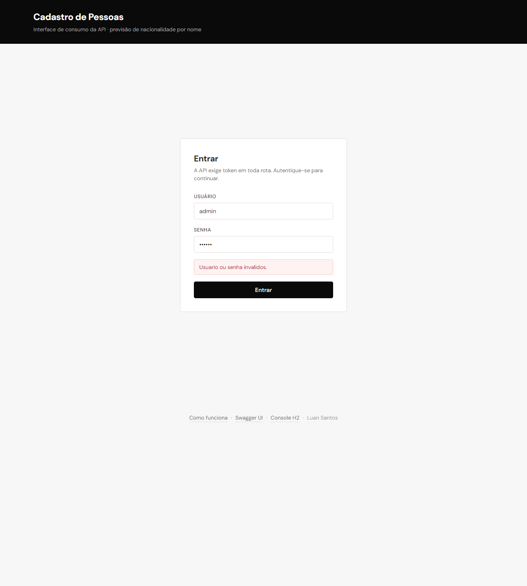
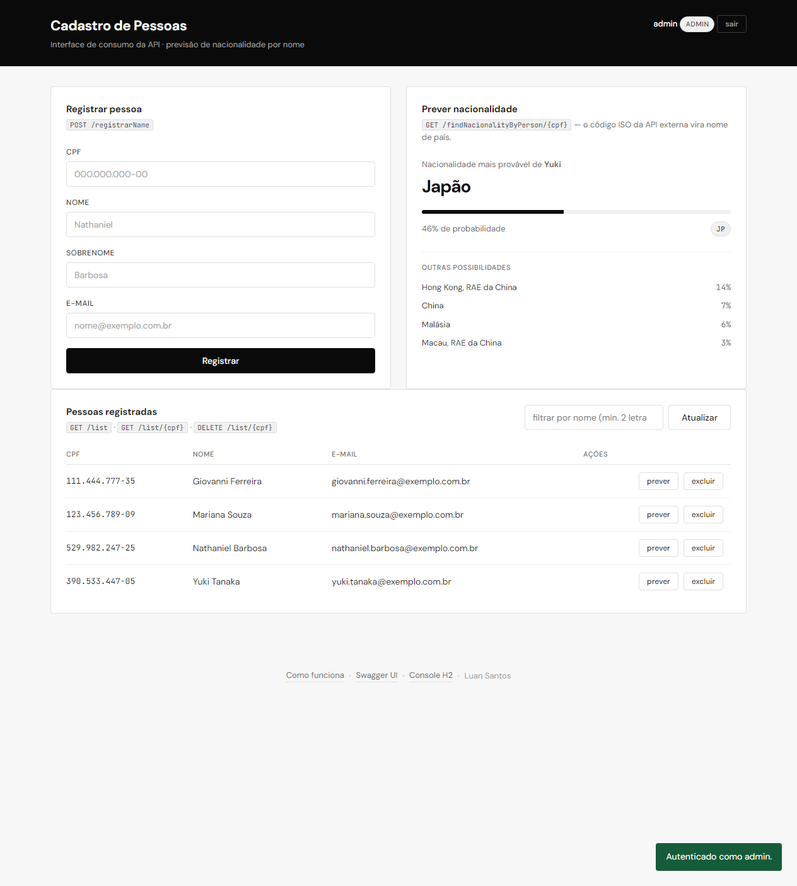
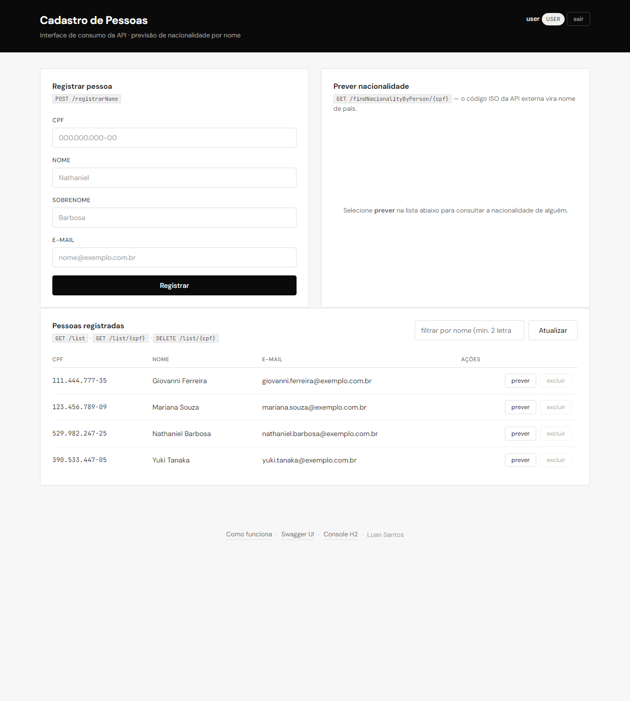

Prova técnica · Java
O que a prova pediu, o que eu construí, como cada tela funciona e por que tomei cada decisão. Escrito para ser lido por quem programa e por quem não programa.
Ponto de partida
O enunciado tem três exigências. Elas estão numeradas aqui porque estavam numeradas na prova — a ordem é dela, não minha.
Cadastrar uma pessoa, listar todas, consultar uma, excluir uma, e prever a nacionalidade dela consultando um serviço externo. Cada um precisa ter pelo menos uma validação de dado.
Proteger pelo menos a operação mais crítica — ou todas. O método era livre: usuário e senha, token, IP, o que eu escolhesse.
Uma tela, de preferência web, que consuma pelo menos um dos endereços acima.
Para quem não é da área
Três palavras aparecem o tempo todo daqui pra frente. Elas são simples.
É a parte do sistema que não tem tela. Ela existe para outros programas conversarem com ela. Pense num caixa de banco atrás de um guichê: você passa um pedido pela abertura, ele responde. A tela bonita é só um cliente desse guichê — poderia ser um aplicativo de celular, uma planilha, outro sistema.
Cada guichê específico. Um serve para cadastrar, outro para consultar, outro para excluir. São os cinco "endereços" que a prova pediu.
Um crachá temporário. Você mostra usuário e senha uma vez, o sistema te devolve um crachá, e a partir daí você mostra o crachá em vez da senha. Ele vence sozinho depois de um tempo — no caso, uma hora.
Resposta
Os cinco endereços saíram com os nomes exatos que a prova escreveu. A coluna da direita mostra a validação de cada um — era exigência do enunciado que cada endereço tivesse a sua.
| Operação | Endereço do enunciado | Equivalente REST | Precisa de crachá? | O que é conferido |
|---|---|---|---|---|
| Entrar no sistema | POST /auth/login |
— | aberto | usuário e senha preenchidos |
| Cadastrar pessoa | POST /registrarName |
POST /pessoas |
crachá | CPF de verdade, nome e sobrenome só com letras, e-mail em formato válido, nada em branco |
| Listar pessoas | GET /list |
GET /pessoas |
crachá | filtro de busca com no mínimo 2 letras |
| Consultar uma pessoa | GET /list/{cpf} |
GET /pessoas/{cpf} |
crachá | CPF conferido antes de consultar o banco |
| Excluir uma pessoa | DELETE /list/{cpf} |
DELETE /pessoas/{cpf} |
crachá de admin | mesma conferência de CPF, e só o perfil admin passa |
| Prever nacionalidade | GET /findNacionalityByPerson/{cpf} |
GET /pessoas/{cpf}/nacionalidade |
crachá | CPF conferido, e o nome conferido antes de sair para o serviço externo |
A coluna do meio é o que a prova pediu, letra por letra. Requisito escrito não se reescreve por gosto, então essas rotas continuam valendo e são as que a interface usa.
A coluna da direita é como a mesma operação se chamaria numa API pública.
registrarName cadastra uma pessoa inteira, não só o nome, e
list no singular não lista nada — identifica um registro. Nenhum
dos dois nomes descreve o que a rota faz, e quem for consumir a API depois
tropeça nisso.
Não existe código duplicado: é o mesmo método atendendo por dois caminhos. O detalhe que importa é que a exigência de perfil admin na exclusão cobre os dois endereços — se cobrisse só o do enunciado, a rota nova seria uma porta dos fundos para apagar gente sem permissão. Tem teste automatizado só para provar que essa porta está fechada.
Requisito 03
São duas telas na mesma página: a de entrada e a do sistema. Quem decide qual delas aparece é a existência de um crachá válido — não um menu, não um botão de navegação. Isso importa, e explico o porquê logo abaixo.

admin faz tudo. O user
faz tudo menos excluir. Isso é proposital e aparece na Tela 4.


JP à direita é o código que o serviço externo devolveu; "Japão" é a
tradução que eu faço. Abaixo, as outras possibilidades em ordem.
POST /registrarName,
GET /list — mostram qual endereço da API cada bloco está usando. Num
sistema para cliente final eu tiraria. Aqui eles existem para o avaliador ligar a
tela ao código sem precisar procurar.

user: os botões de excluir ficam apagados e não
respondem ao clique.
Mecânica
Quando alguém clica em "prever" na tabela, quatro peças entram em ação. Nenhuma delas confia na anterior.
O passo 3b é o único que sai da nossa casa, e é o único que pode falhar por motivo alheio. Por isso ele tem prazo máximo de resposta: três segundos para conectar, cinco para responder. Se estourar, a nossa API responde "o fornecedor não respondeu" e segue viva. Sem esse prazo, uma lentidão deles viraria uma lentidão nossa.
A pergunta certa
"Se a pessoa já tem CPF, ela não é brasileira? Por que prever a nacionalidade?"
Essa pergunta apareceu durante o desenvolvimento e ela está certa em farejar contradição. A resposta tem três camadas, e todas as três importam.
CPF é registro na Receita Federal, não certidão de nascimento. Estrangeiro que mora aqui tem CPF. Estrangeiro que nem mora aqui, mas tem imóvel, conta ou investimento no Brasil, também tem. É documento fiscal, não documento de origem. Então não, CPF não garante que a pessoa seja brasileira.
Isso é o mais importante. A nationalize.io não consulta registro
civil de ninguém. Ela olha um nome e responde em quais países esse nome é
mais frequente. Quando ela diz "Yuki → Japão, 46%", está dizendo "esse nome
é comum no Japão" — nunca "essa pessoa é japonesa". É palpite estatístico sobre a
palavra, não sobre a pessoa.
Num sistema real, um cadastro que já tem CPF não sairia adivinhando nacionalidade
por nome. O requisito existe na prova para testar outra coisa: se o candidato
sabe consumir um serviço de terceiro, tratar a falha dele, e converter o
dado que ele devolve. Esse serviço devolve código (JP), a
prova pede nome ("Japão"). É aí que está o exercício de verdade.
Sugerir o idioma do atendimento antes do primeiro contato. Segmentar uma base para campanha. Priorizar um tradutor numa fila. Sempre como palpite que ajuda a decidir, nunca como dado cadastral gravado no lugar da informação verdadeira.
E vale dizer em voz alta: inferir origem de pessoa a partir do nome é terreno escorregadio. Usado para personalizar atendimento, ajuda. Usado para negar crédito ou filtrar currículo, vira discriminação — com nome estatístico, mas discriminação. Por isso a resposta da API entrega o palpite e a probabilidade junto: quem consome enxerga que aquilo é um chute de 46%, não um fato.
Sobre a minha parte na contradição: fui eu que escolhi o CPF como identificador — a prova deixava livre. Escolhi porque é o campo que permite a validação mais rica, e explico isso na seção seguinte. Um número sequencial não teria criado a estranheza, mas também não provaria nada sobre validação de dado.
Escolhas
A prova deixou livre. Escolhi CPF porque ele me deixa validar de verdade: além do
formato, o sistema confere os dígitos verificadores — aquela conta
que revela se o número é possível ou foi inventado. Um 111.111.111-11
tem o formato perfeito e é recusado. Com um número sequencial, a única validação
possível seria "isso é um número?", o que não prova nada.
A prova permitia proteger só uma operação. Protegi todas — e coloquei uma exigência extra na exclusão: além do crachá, precisa ser perfil admin. Excluir é a única operação que não tem volta. Nela, saber quem é a pessoa não basta; é preciso saber se ela pode.
O botão apagado da Tela 4 é conveniência visual. A trava real está no servidor: mesmo que alguém edite a página pelo navegador e reative o botão, a API recusa. A regra de ouro é que a tela pode mentir, então quem decide é sempre o servidor. Se o avaliador quiser testar isso, funciona.
Existe um único ponto no código responsável por transformar qualquer problema em resposta. Isso garante que a API sempre responda no mesmo formato — e que ela diferencie os casos em vez de responder "deu erro" para tudo:
| Código | Significa | Exemplo |
|---|---|---|
| 400 | o dado enviado está errado | CPF com dígito inválido |
| 401 | sem crachá, ou crachá vencido | token expirou no meio do uso |
| 403 | tem crachá, mas não pode | user tentando excluir |
| 404 | CPF válido, mas ninguém cadastrado com ele | consulta de quem não existe |
| 409 | esse CPF já está cadastrado | cadastro repetido |
| 502 | o serviço externo falhou — não fomos nós | nationalize.io fora do ar |
Essa distinção entre 400, 404 e 502 parece detalhe e não é. Quem consome a API precisa saber se deve corrigir o dado, avisar que não existe, ou tentar de novo mais tarde.
O banco vive dentro da própria aplicação. Isso significa que quem for avaliar roda o projeto com um comando, sem instalar nem configurar banco nenhum. O preço é que os dados somem quando a aplicação para — aceitável numa prova, e trocar por um banco de verdade mexe em quatro linhas de configuração.
Verificação
São 48 testes automatizados que rodam a cada build. Eles não testam se o código compila — testam se ele se comporta:
user não consegue excluir; admin consegue.
Nos testes, o serviço externo é substituído por um dublê. Teste que depende de
internet não é teste, é loteria — se a nationalize.io cair, o build
não pode quebrar por causa disso.
Fora os automatizados, rodei a coisa toda à mão: todos os endereços por linha de comando, com chamada real ao serviço externo, e as quatro telas dirigindo o navegador de verdade — entrar, errar a senha, cadastrar, prever, excluir, sair.
Honestidade
Isto é uma prova, não um sistema em produção. Quatro coisas eu deixei fora conscientemente, e prefiro dizer do que deixar alguém descobrir:
A prova diz "para os dois pontos a seguir" e lista um endereço só. Implementei o que está escrito e registrei a inconsistência, em vez de inventar um sexto endereço para preencher.
Os nomes das rotas misturam português e inglês, e /registrarName
cadastra uma pessoa inteira, não só o nome. Mantive exatamente como estava escrito.
Num projeto meu eu proporia outro nome — mas requisito escrito não se reescreve por
gosto pessoal.